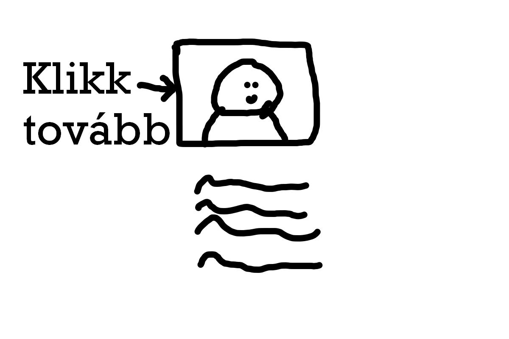
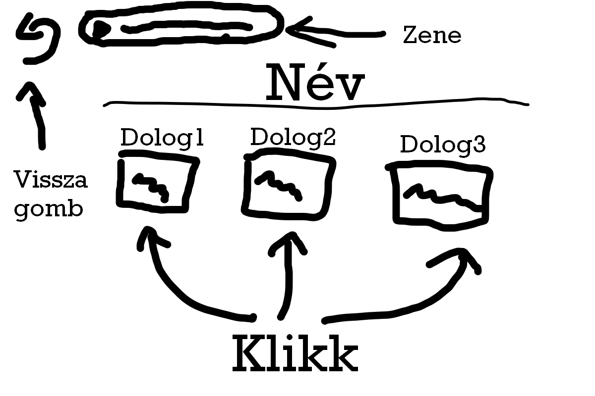
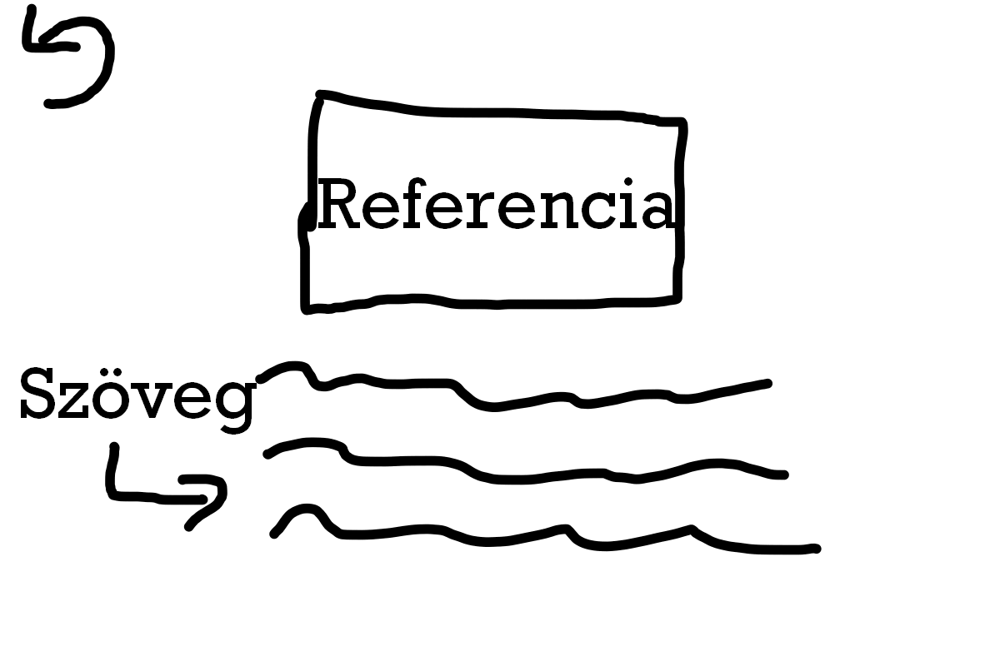
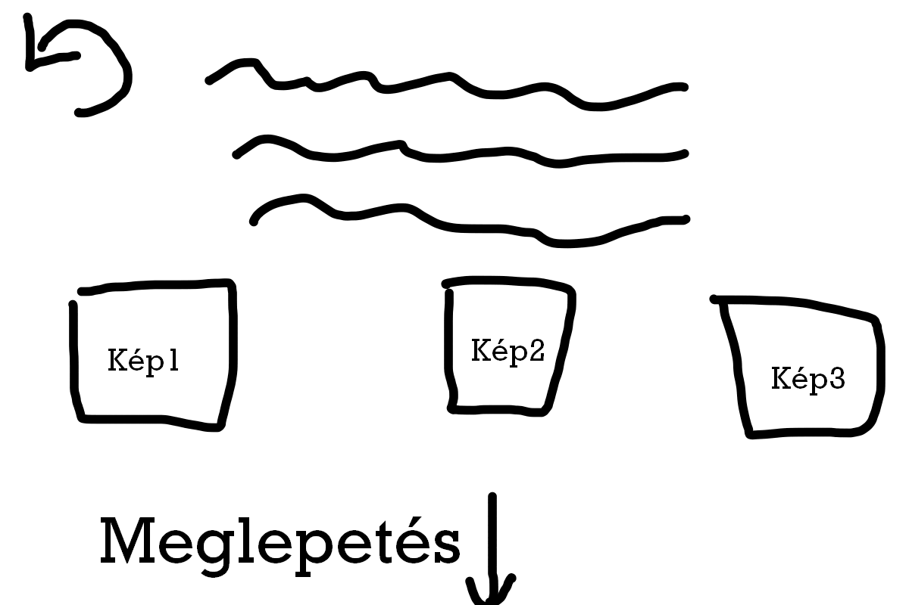
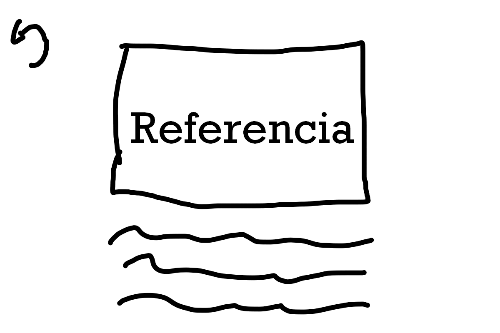

    
A legnagyobb problémát a komplett elrendezés kitalálása alkotta, mivel a megvalósítás nem okozott túl nagy gondot. Ezen kívül a felmerülő problémák közé tartozott a konkrét témák kigondolása, mivel nincs sok minden amit fel tudnék mutatni.